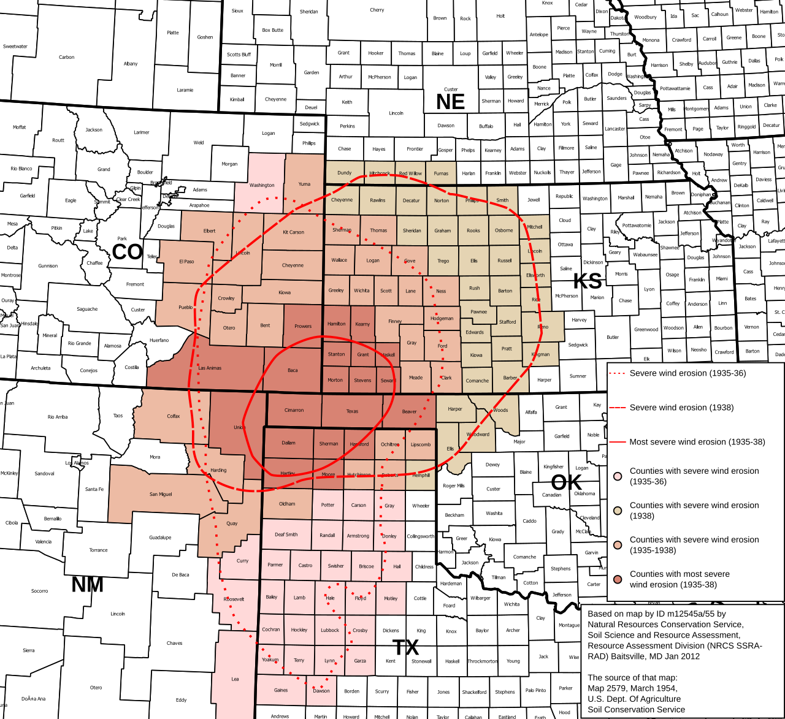
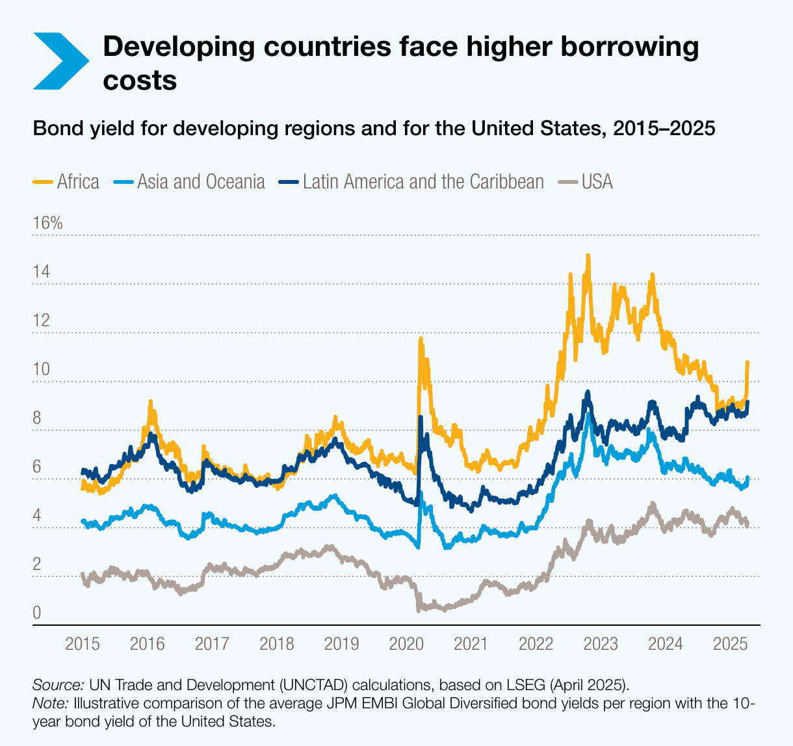
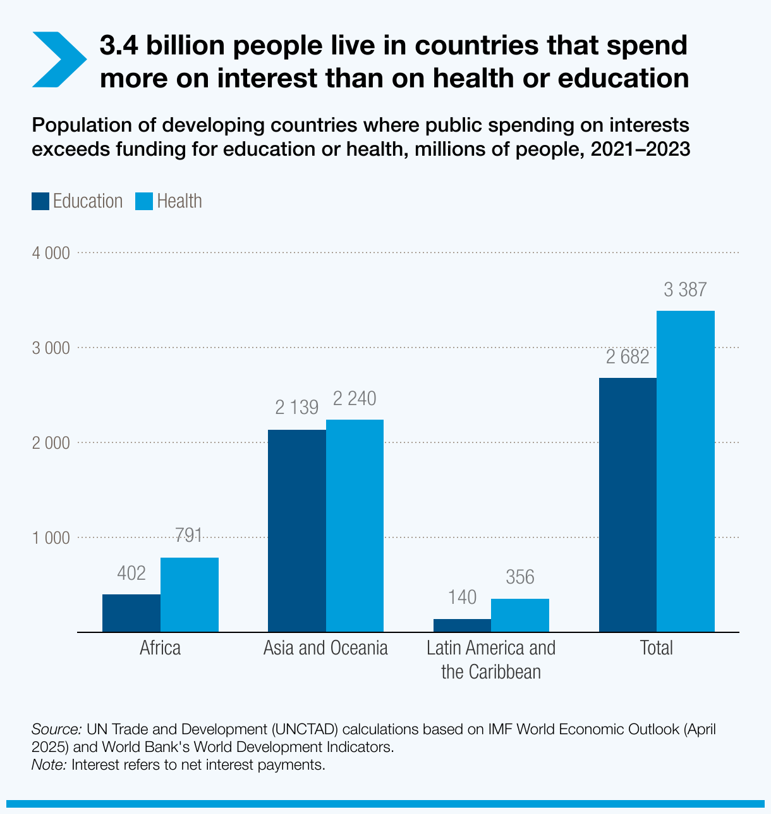
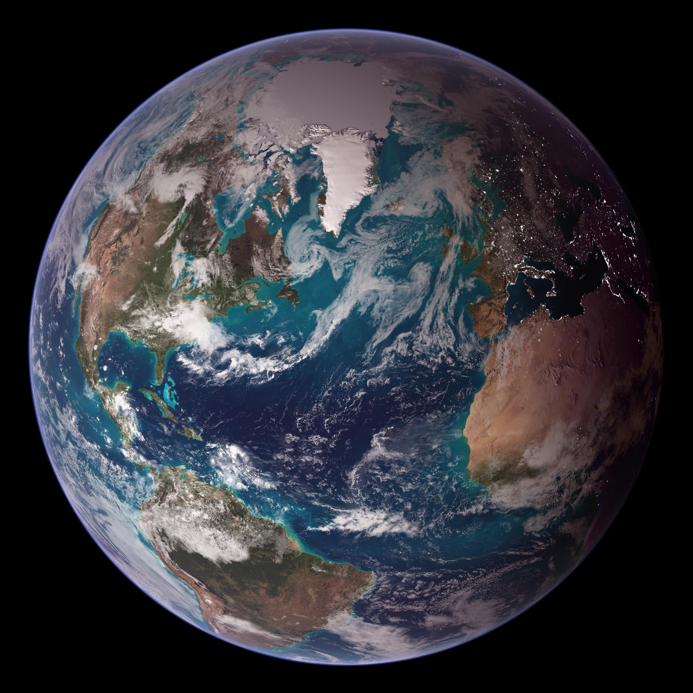

Today’s Agenda
Section 3: Current Challenges in American Environmentalism
3.2 Capitalism: The “Need” for Growth Versus an Exhaustible Environment
- The Capitalist Drive for “More”?
Justin Leinaweaver (Fall 2026)
Our Capitalist System

The Dust Bowl (approx 1932-1940)

Capitalism and the Dust Bowl
American culture is capitalist
Capitalism replaces our national identity with one focused on being an isolated, economically stressed individual (consumer)
Capitalism teaches us that nature is a resource and our survival is separate from nature’s survival
Capitalism shortens time horizons and creates incentives to ignore science
Therefore, capitalism caused the Dust Bowl

Dauvergne, Peter. (2016). Environmentalism of the Rich. The MIT Press.

Chapters 2 and 3
?
?
?
…
Therefore, globalization is a modern extension of the destructive imperialism we thought was in our past
Chapters 2 and 3
The age of European imperialism devastated the social fabric of developing societies around the world
The age of European imperialism devastated ecosystems around the world
In the 20th century the developed world shifted to globalization as its means of extracting profit, extending control and imposing beliefs on the world
Globalization is frequently as “violent and exploitative” as imperialism
Therefore, globalization is a modern extension of the destructive imperialism we thought was in our past





Chapter 4
?
?
?
…
Therefore, you cannot embed environmentalism in the capitalist system and expect ecologically positive outcomes
Chapter 4
“To survive, capitalism needs to expand production and markets” (49)
Companies work to be cleaner, more efficient and less wasteful THEN reinvest those profits in expansion in order to sell even more stuff
Too often, corporate social responsibility (CSR) is about protecting wealth and privilege rather than promoting ecological ends
Those who question this environmentalism of the rich are scorned and derided
Therefore, you cannot embed environmentalism in the capitalist system and expect ecologically positive outcomes
For Next Class
Dauvergne’s (2016) Environmentalism of the Rich
Chapter 5
Chapter 6
Canvas reflection